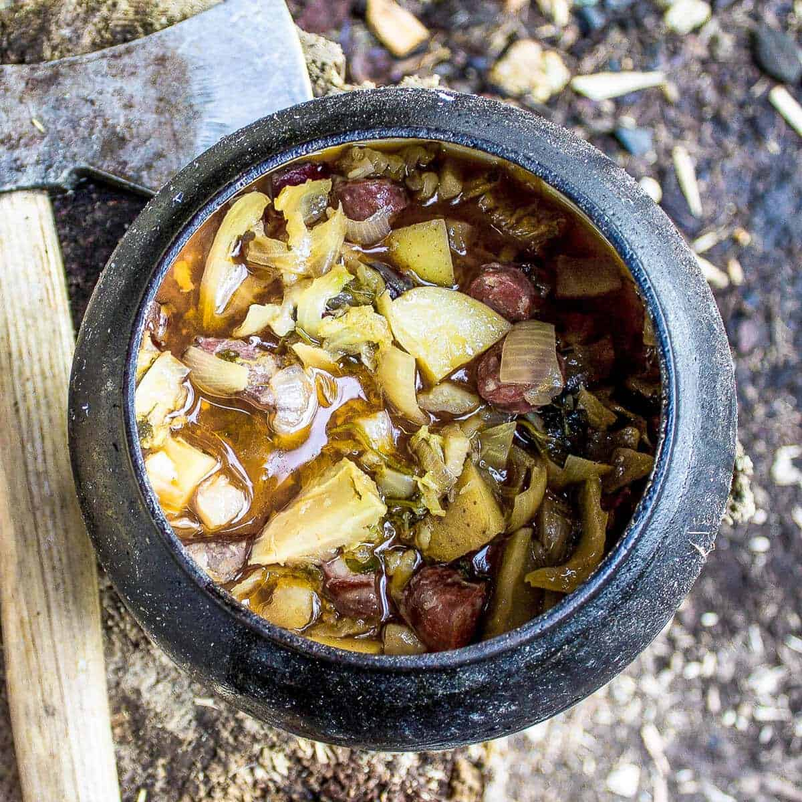

Crockpot Medieval Viking Stew

Description:
-
Prep: 10 mins
-
Cook: 5 hours (better not be THAT hungry when you start)
-
Additional:5 mins
-
Total: 5 hours 10 minutes
-
Servings: 3
Nutrition Facts:
Per Serving: 316 calories; protein 2.4g; carbohydrates 60.5g; fat 8.4g; cholesterol 20.3mg; sodium 97.9mg.
Ingredients:
- 3 large onions - roughly diced
- 6 cloves garlic - crushed
- 3 large potatoes - chopped into chunks
- 675 g (1 ½ lb) Meat of choice - Beef shin, Venison, Smoked sausage
- 337 ½ g (¾ lb) bacon - optional but necessary and chopped roughly
- ¾ cabbage - or other vegetables like carrot or celeriac roughly chopped or grated
- 750 ml (3 ⅙ cups) beer - Dark beer works best
- 750 ml (3 ⅙ cups) water/meat or vegetable stock
Steps:
-
Place all the ingredients together into the pot and mix it well.
-
Cook it at low medium temperature for about 5 hours monitoring it every now and again adding water or stock if needed.
-
Season with salt and pepper when done.
-
You can also chop up some herbs(parsley, marjoram, dill)and add it in when done.
Notes:
This is a super easy recipe and method but play around with timings and heat as no fire is the same.
Don't forget to keep the fire burning by adding some wood every now and again.
See the post for serving suggestions and alternatives.
If you can't make a fire and you want to get a close to authentic smokey flavour but using a crock pot or instant pot, then add a touch of natural smoke liquid or very high quality smoked natural meat.
source